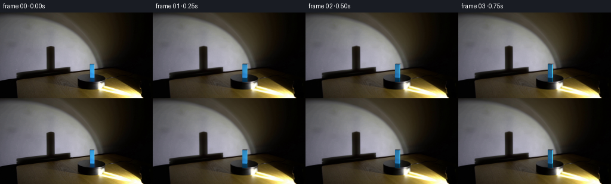
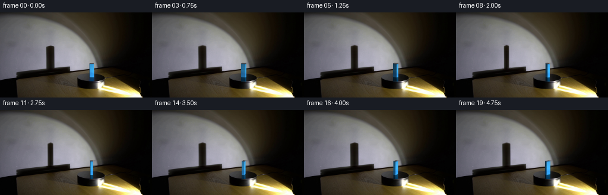
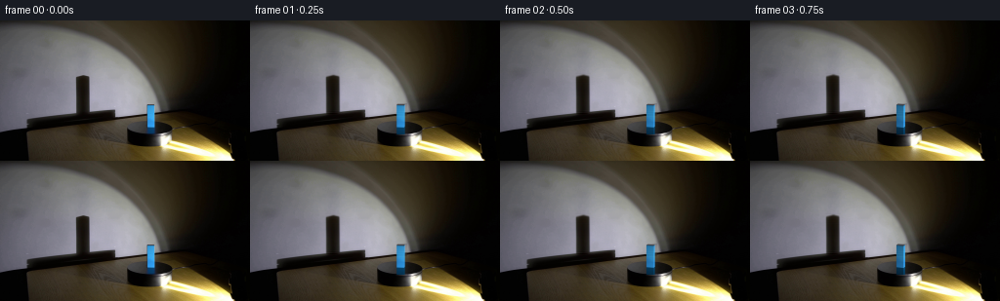

CODING AGENTS AS PIXEL WORLD MODELS
traex/GPT-6.1-Sol · 0073
点击播放 · 原生 RGB 像素
逐轮保存的候选
回放视频、检查图与代码变化。
每份候选均可单独播放。实际图片检查记录在下方工具轨迹中。
候选 01播放与检查图
点击播放 · 原生 RGB 像素

展开代码变化
--- 上一保存版本
+++ 本次保存版本
@@ -0,0 +1,179 @@
+from pathlib import Path
+import numpy as np
+from PIL import Image
+import cv2
+from scipy.ndimage import gaussian_filter, map_coordinates
+from scipy.spatial import ConvexHull
+import artifact_io
+
+ROOT = Path(__file__).resolve().parent
+W,H = 256,144
+SS=4
+
+
+def main():
+ original=np.asarray(Image.open(ROOT/'first_frame.png').convert('RGB'),dtype=np.uint8)
+ photo=original.astype(np.float32)
+ rng=np.random.default_rng(137)
+ # Reconstruct the illuminated wall underneath the moving occlusion, using
+ # the local wall on either side. The table and the turntable stay fixed.
+ clean=photo.copy()
+ for y in range(55,95):
+ left=photo[y,74:77].mean(axis=0)
+ right=photo[y,93:96].mean(axis=0)
+ for x in range(77,93):
+ t=(x-75)/(94-75)
+ clean[y,x]=left*(1-t)+right*t
+ # Keep the fine plaster texture continuous through the repaired patch.
+ for y in range(55,93):
+ for x in range(77,93):
+ sample=photo[y,x-18]-gaussian_filter(photo,1.6,axes=(0,1))[y,x-18] if False else 0
+ shadow_delta=np.zeros_like(photo)
+ shadow_delta[55:95,77:93]=clean[55:95,77:93]-photo[55:95,77:93]
+ # Include the faint edge pixels without inventing an extra dark border.
+ # Remove the painted pillar and its blue reflection from the stationary disk.
+ for y in range(85,118):
+ left=clean[y,147:149].mean(axis=0)
+ right=clean[y,161:163].mean(axis=0)
+ for x in range(149,161):
+ t=(x-148)/(162-148)
+ clean[y,x]=left*(1-t)+right*t
+ # Low amplitude texture on the filled disk avoids a conspicuously smooth patch.
+ for y in range(85,118):
+ for x in range(149,161):
+ clean[y,x]+=rng.normal(0,.3,3)
+
+ # The face is sampled from the actual blue material, not a solid blue fill.
+ face=photo[87:109,151:158].copy()
+ # Remove sensor noise before subpixel texture resampling.
+ face=gaussian_filter(face,.32,axes=(0,1))
+ # Broad face irradiance measured in the source image, retained as a vertical
+ # profile when one of the narrow sides turns toward the observer.
+ profile=face.mean(axis=1)
+ light=np.array([.73,-.68,.07]);light/=np.linalg.norm(light)
+ pitch=.25;up=np.sqrt(1-pitch*pitch)
+ bw,bd,bheight=7.5,4.0,22.5/up
+ cx,cy=153.85,108.5
+ base=np.array([[-bw/2,-bd/2,0],[bw/2,-bd/2,0],[bw/2,bd/2,0],[-bw/2,bd/2,0]],np.float32)
+ verts=np.vstack([base,base+[0,0,bheight]])
+ faces=[([0,1,5,4],np.array([0,-1,0]),0),([1,2,6,5],np.array([1,0,0]),1),([2,3,7,6],np.array([0,1,0]),2),([3,0,4,7],np.array([-1,0,0]),3),([4,5,6,7],np.array([0,0,1]),4)]
+ # Pixel-center aligned supersampling.
+ ys,xs=np.mgrid[0:H*SS,0:W*SS].astype(np.float32)
+ px=(xs+.5)/SS-.5;py=(ys+.5)/SS-.5
+ highbase=cv2.resize(clean,(W*SS,H*SS),interpolation=cv2.INTER_CUBIC)
+ highbase=np.clip(highbase,0,255)
+ # Shiny disk silhouette; its outline and body come directly from the photo.
+ er=((px-153.6)/22.45)**2+((py-109.6)/7.05)**2
+ diskclip=np.clip((1-er)*18,0,1)
+ diskclip*=np.clip((py-108.9)*3+1,0,1)
+ tablegrain=photo-gaussian_filter(photo,1.1,axes=(0,1))
+ grainhi=cv2.resize(tablegrain,(W*SS,H*SS),interpolation=cv2.INTER_LINEAR)
+
+ def rotate(theta):
+ c,s=np.cos(theta),np.sin(theta)
+ R=np.array([[c,-s,0],[s,c,0],[0,0,1]],np.float32)
+ return verts@R.T,R
+ def project(v,mirror=False):
+ return np.stack([cx+v[:,0],cy-pitch*v[:,1]+up*v[:,2]*(1 if mirror else -1)],axis=1)
+ def polyraster(poly):
+ pp=np.round((poly+.5)*SS-.5).astype(np.int32)
+ m=np.zeros((H*SS,W*SS),np.uint8)
+ cv2.fillConvexPoly(m,pp,255,lineType=cv2.LINE_AA)
+ return m.astype(np.float32)/255
+ def texture(poly,side,normal):
+ # Invert the face's affine image projection; all vertical faces are planar.
+ p0,p1,p2,p3=poly
+ mat=np.column_stack([p1-p0,p3-p0])
+ inv=np.linalg.inv(mat)
+ u=inv[0,0]*(px-p0[0])+inv[0,1]*(py-p0[1])
+ v=inv[1,0]*(px-p0[0])+inv[1,1]*(py-p0[1])
+ # Polygon vertices run bottom-left, bottom-right, top-right, top-left.
+ row=(1-v)*22.5-.5
+ row=np.clip(row,0,21)
+ col=np.clip(u*7-.5,0,6)
+ vals=np.stack([map_coordinates(face[:,:,ch],[row,col],order=1,mode='nearest') for ch in range(3)],axis=-1)
+ if side!=0:
+ # The same paint on the narrow faces, with slightly smoother texture.
+ vals=.32*vals+.68*np.stack([np.interp(row,np.arange(22),profile[:,ch]) for ch in range(3)],axis=-1)
+ nd=max(0,float(normal@light))
+ illum=(.17+.83*nd)/(.17+.83*.68)
+ vals=vals*illum
+ # Small, angle-dependent grazing highlight, with no moving light source.
+ vals+=np.array([2.5,5,7])*max(0,normal[0])*.35
+ return np.clip(vals,0,255)
+ def shadow_dims(v):
+ sx=84.8+1.65*v[:,0]+.55*v[:,1]
+ sy=94.75-.45*v[:,1]-1.71*up*v[:,2]
+ return sx.max()-sx.min(),sy.min(),sy.max()
+ v0,R0=rotate(0)
+ sw0,st0,sb0=shadow_dims(v0)
+ yy,xx=np.mgrid[0:H,0:W].astype(np.float32)
+ rendered=[]
+ for i in range(20):
+ theta=-np.deg2rad(31.0)*(i/4.0)
+ v,R=rotate(theta)
+ width,top,bottom=shadow_dims(v)
+ # Transport the actual measured umbra, so edges retain the optical
+ # softness and warm coloration of the first-frame spotlight.
+ width_ratio=width/sw0
+ height_ratio=(94.75-top)/(94.75-st0)
+ mapx=(xx-84.8)/width_ratio+84.8
+ mapy=(yy-94.75)/height_ratio+94.75
+ delta=cv2.remap(shadow_delta,mapx.astype(np.float32),mapy.astype(np.float32),cv2.INTER_LINEAR,borderMode=cv2.BORDER_CONSTANT)
+ small=clean-delta
+ canvas=cv2.resize(small,(W*SS,H*SS),interpolation=cv2.INTER_CUBIC)
+ canvas=np.clip(canvas,0,255)
+ # A circular platform has a fixed silhouette under rotation. Only its
+ # very subtle surface grain travels with the material.
+ r=(1-diskclip)*0
+ if i:
+ X=(px-153.6);Y=(py-109.6)/.314
+ cc,ss=np.cos(theta),np.sin(theta)
+ gx=153.6+cc*X+ss*Y
+ gy=109.6+.314*(-ss*X+cc*Y)
+ moving=cv2.remap(tablegrain,gx.astype(np.float32),gy.astype(np.float32),cv2.INTER_LINEAR,borderMode=cv2.BORDER_REFLECT)
+ grainmask=np.clip((1-er)*12,0,1)*.30
+ canvas+=(moving-grainhi)*grainmask[:,:,None]
+ # Reflection of the actual moving faces in the polished dark surface.
+ # Its short apparent length is set by the finite elliptical disk.
+ reflection=canvas.copy()
+ reflcov=np.zeros((H*SS,W*SS),np.float32)
+ face_order=[]
+ view=np.array([0,-up,pitch])
+ for ids,n,side in faces:
+ norm=R@n
+ if side==4 or norm@view<=.0001: continue
+ poly=project(v[ids],mirror=True)
+ m=polyraster(poly)*diskclip
+ tex=texture(poly,side,norm)
+ fade=np.exp(-np.maximum(py-109.0,0)/30)
+ col=tex*np.array([.10,.43,.46])*fade[:,:,None]+canvas*.08
+ reflection=reflection*(1-m[:,:,None])+col*m[:,:,None]
+ reflcov=np.maximum(reflcov,m)
+ canvas=reflection
+ # Paint far-to-near visible faces. The top is only weakly illuminated
+ # because the spotlight is located low in front of the experiment.
+ visible=[]
+ for ids,n,side in faces:
+ norm=R@n
+ if norm@view>1e-5:
+ depth=(v[ids]@view).mean()
+ visible.append((depth,ids,norm,side))
+ for _,ids,norm,side in sorted(visible,key=lambda item:item[0]):
+ poly=project(v[ids])
+ m=polyraster(poly)
+ if side==4:
+ col=np.zeros_like(canvas)+np.array([65.,68.,74.])
+ col+=grainhi*.20
+ else:
+ col=texture(poly,side,norm)
+ canvas=canvas*(1-m[:,:,None])+col*m[:,:,None]
+ final=cv2.resize(np.clip(canvas,0,255),(W,H),interpolation=cv2.INTER_AREA)
+ rendered.append(np.clip(np.round(final),0,255).astype(np.uint8))
+ np.save(ROOT/'.tmp'/'candidate.npy',np.stack(rendered))
+ Image.fromarray(rendered[0]).save(ROOT/'.tmp'/'reconstructed_initial.png')
+ frames=np.stack(rendered)
+ frames[0]=original
+ artifact_io.save(frames,ROOT)
+
+if __name__=='__main__': main()
候选 02播放与检查图
点击播放 · 原生 RGB 像素


展开代码变化
--- 上一保存版本
+++ 本次保存版本
@@ -24,10 +24,6 @@
for x in range(77,93):
t=(x-75)/(94-75)
clean[y,x]=left*(1-t)+right*t
- # Keep the fine plaster texture continuous through the repaired patch.
- for y in range(55,93):
- for x in range(77,93):
- sample=photo[y,x-18]-gaussian_filter(photo,1.6,axes=(0,1))[y,x-18] if False else 0
shadow_delta=np.zeros_like(photo)
shadow_delta[55:95,77:93]=clean[55:95,77:93]-photo[55:95,77:93]
# Include the faint edge pixels without inventing an extra dark border.
@@ -66,7 +62,7 @@
er=((px-153.6)/22.45)**2+((py-109.6)/7.05)**2
diskclip=np.clip((1-er)*18,0,1)
diskclip*=np.clip((py-108.9)*3+1,0,1)
- tablegrain=photo-gaussian_filter(photo,1.1,axes=(0,1))
+ tablegrain=np.clip(clean-gaussian_filter(clean,1.1,axes=(0,1)),-2.2,2.2)
grainhi=cv2.resize(tablegrain,(W*SS,H*SS),interpolation=cv2.INTER_LINEAR)
def rotate(theta):
@@ -96,7 +92,7 @@
# The same paint on the narrow faces, with slightly smoother texture.
vals=.32*vals+.68*np.stack([np.interp(row,np.arange(22),profile[:,ch]) for ch in range(3)],axis=-1)
nd=max(0,float(normal@light))
- illum=(.17+.83*nd)/(.17+.83*.68)
+ illum=min(1.085,(.24+.76*nd)/(.24+.76*.68))
vals=vals*illum
# Small, angle-dependent grazing highlight, with no moving light source.
vals+=np.array([2.5,5,7])*max(0,normal[0])*.35
@@ -125,7 +121,6 @@
canvas=np.clip(canvas,0,255)
# A circular platform has a fixed silhouette under rotation. Only its
# very subtle surface grain travels with the material.
- r=(1-diskclip)*0
if i:
X=(px-153.6);Y=(py-109.6)/.314
cc,ss=np.cos(theta),np.sin(theta)
@@ -168,7 +163,9 @@
else:
col=texture(poly,side,norm)
canvas=canvas*(1-m[:,:,None])+col*m[:,:,None]
- final=cv2.resize(np.clip(canvas,0,255),(W,H),interpolation=cv2.INTER_AREA)
+ # Only the analytic residual is filtered back to the source grid; the
+ # unchanging camera background remains pixel-identical to the photograph.
+ final=clean+cv2.resize(canvas-highbase,(W,H),interpolation=cv2.INTER_AREA)
rendered.append(np.clip(np.round(final),0,255).astype(np.uint8))
np.save(ROOT/'.tmp'/'candidate.npy',np.stack(rendered))
Image.fromarray(rendered[0]).save(ROOT/'.tmp'/'reconstructed_initial.png')
可观测工具轨迹
实际执行的命令与返回图片。
命令 1exit 0
/bin/bash -lc 'ls -la && cat prompt.txt && cat GENERATION_RULES.md'
命令 2exit 0
/bin/bash -lc "cat artifact_io.py && python - <<'PY'
from PIL import Image
import numpy as np
im=np.array(Image.open('first_frame.png').convert('RGB'))
print(im.shape)
for y in range(0,144,4):
print(f'{y:3}', ''.join('B' if b>r*1.2 and b>g*1.13 and b>40 else '#' if max(r,g,b)<28 else 'd' if max(r,g,b)<65 else '+' if max(r,g,b)<110 else ':' if max(r,g,b)<170 else '.' if max(r,g,b)<220 else ' ' for r,g,b in im[y,::3]))
print('row values')
for y in [0,10,20,30,40,50,60,70,80,90,100,110,120,130,140]:
print(y,[(x,tuple(im[y,x])) for x in range(0,256,16)])
PY"命令 3exit 0
/bin/bash -lc "python - <<'PY'
import numpy as np
from PIL import Image
im=np.array(Image.open('first_frame.png'))
r,g,b=im[:,:,0].astype(float),im[:,:,1].astype(float),im[:,:,2].astype(float)
m=(b-r>12)&(b-g>6)&(b>30)
for y in range(83,125):
print(f'{y:3}', ''.join('B' if m[y,x] else '#' if max(im[y,x])<14 else 'd' if max(im[y,x])<35 else 'o' if max(im[y,x])<65 else '+' if max(im[y,x])<100 else ':' if max(im[y,x])<145 else '.' if max(im[y,x])<200 else ' ' for x in range(130,190)))
print('BLUE runs')
for y in range(83,122):
xs=np.flatnonzero(m[y]);xs=xs[(xs>130)&(xs<170)]
if len(xs):print(y, xs.tolist(), im[y,xs].tolist())
print('shadow')
for y in range(51,98):
print(f'{y:3}', ''.join('#' if max(im[y,x])<25 else 'd' if max(im[y,x])<45 else 'o' if max(im[y,x])<80 else '+' if max(im[y,x])<120 else ':' if max(im[y,x])<155 else '.' for x in range(70,100)))
PY"命令 4exit 0
/bin/bash -lc "python - <<'PY'
from PIL import Image
import numpy as np
im=np.array(Image.open('first_frame.png'));gray=im.mean(axis=2)
# precise ascii black features platform/tables
for y in range(90,135):
print(f'{y:3} '+''.join('B' if int(im[y,x,2])-int(im[y,x,0])>18 and int(im[y,x,2])-int(im[y,x,1])>8 else ' ' if gray[y,x]>185 else '.' if gray[y,x]>140 else ':' if gray[y,x]>100 else '+' if gray[y,x]>65 else 'o' if gray[y,x]>40 else 'd' if gray[y,x]>20 else 'X' if gray[y,x]>9 else '#' for x in range(0,235,2)))
print('Top block full RGB')
for y in range(83,89):print(y,im[y,145:163].tolist())
print('platform pixels')
for y in [101,103,105,107,109,111,113,115,117,119,121,123,125,127,129]:
print(y,[(x,tuple(im[y,x])) for x in range(130,178,3)])
PY"命令 5exit 0
/bin/bash -lc "python - <<'PY'
from PIL import Image
import numpy as np
im=np.array(Image.open('first_frame.png'))
for y in range(98,119):
s=''
for x in range(120,185):
r,g,b=map(int,im[y,x]);avg=(r+g+b)/3
if b-r>20 and b-g>10:c='B'
elif max(r,g,b)-min(r,g,b)<7 and avg>35:c='N'
elif avg<7:c='#'
elif avg<20:c='x'
elif avg<40:c='d'
elif avg<65:c='o'
elif avg<90:c='+'
elif avg<135:c=':'
elif avg<190:c='.'
else:c=' '
s+=c
print(y,s)
PY"命令 6exit 0
/bin/bash -lc "python - <<'PY' import importlib.util for m in ['cv2','scipy','numpy','PIL']: print(m,bool(importlib.util.find_spec(m))) PY"
命令 7exit 0
/bin/bash -lc "python - <<'PY'
from PIL import Image
import numpy as np
im=np.array(Image.open('first_frame.png'))
for y in [53,54,55,56,57,58,59,60,70,80,90,91,92,93,94,95,96]:
print(y, [(x,im[y,x].tolist()) for x in range(72,102,2)])
PY"命令 8exit 0
/bin/bash -lc "python - <<'PY'
from PIL import Image
import numpy as np
im=np.array(Image.open('first_frame.png'))
for y in range(109,118):print(y,[(x,im[y,x].tolist()) for x in [145,146,147,148,149,150,159,160,161,162]])
PY"命令 9exit 0
/bin/bash -lc "cat > generate.py <<'PY'
from pathlib import Path
import numpy as np
from PIL import Image
import cv2
from scipy.ndimage import gaussian_filter, map_coordinates
from scipy.spatial import ConvexHull
import artifact_io
ROOT = Path(__file__).resolve().parent
W,H = 256,144
SS=4
def main():
original=np.asarray(Image.open(ROOT/'first_frame.png').convert('RGB'),dtype=np.uint8)
photo=original.astype(np.float32)
rng=np.random.default_rng(137)
# Reconstruct the illuminated wall underneath the moving occlusion, using
# the local wall on either side. The table and the turntable stay fixed.
clean=photo.copy()
for y in range(55,95):
left=photo[y,74:77].mean(axis=0)
right=photo[y,93:96].mean(axis=0)
for x in range(77,93):
t=(x-75)/(94-75)
clean[y,x]=left*(1-t)+right*t
# Keep the fine plaster texture continuous through the repaired patch.
for y in range(55,93):
for x in range(77,93):
sample=photo[y,x-18]-gaussian_filter(photo,1.6,axes=(0,1))[y,x-18] if False else 0
shadow_delta=np.zeros_like(photo)
shadow_delta[55:95,77:93]=clean[55:95,77:93]-photo[55:95,77:93]
# Include the faint edge pixels without inventing an extra dark border.
# Remove the painted pillar and its blue reflection from the stationary disk.
for y in range(85,118):
left=clean[y,147:149].mean(axis=0)
right=clean[y,161:163].mean(axis=0)
for x in range(149,161):
t=(x-148)/(162-148)
clean[y,x]=left*(1-t)+right*t
# Low amplitude texture on the filled disk avoids a conspicuously smooth patch.
for y in range(85,118):
for x in range(149,161):
clean[y,x]+=rng.normal(0,.3,3)
# The face is sampled from the actual blue material, not a solid blue fill.
face=photo[87:109,151:158].copy()
# Remove sensor noise before subpixel texture resampling.
face=gaussian_filter(face,.32,axes=(0,1))
# Broad face irradiance measured in the source image, retained as a vertical
# profile when one of the narrow sides turns toward the observer.
profile=face.mean(axis=1)
light=np.array([.73,-.68,.07]);light/=np.linalg.norm(light)
pitch=.25;up=np.sqrt(1-pitch*pitch)
bw,bd,bheight=7.5,4.0,22.5/up
cx,cy=153.85,108.5
base=np.array([[-bw/2,-bd/2,0],[bw/2,-bd/2,0],[bw/2,bd/2,0],[-bw/2,bd/2,0]],np.float32)
verts=np.vstack([base,base+[0,0,bheight]])
faces=[([0,1,5,4],np.array([0,-1,0]),0),([1,2,6,5],np.array([1,0,0]),1),([2,3,7,6],np.array([0,1,0]),2),([3,0,4,7],np.array([-1,0,0]),3),([4,5,6,7],np.array([0,0,1]),4)]
# Pixel-center aligned supersampling.
ys,xs=np.mgrid[0:H*SS,0:W*SS].astype(np.float32)
px=(xs+.5)/SS-.5;py=(ys+.5)/SS-.5
highbase=cv2.resize(clean,(W*SS,H*SS),interpolation=cv2.INTER_CUBIC)
highbase=np.clip(highbase,0,255)
# Shiny disk silhouette; its outline and body come directly from the photo.
er=((px-153.6)/22.45)**2+((py-109.6)/7.05)**2
diskclip=np.clip((1-er)*18,0,1)
diskclip*=np.clip((py-108.9)*3+1,0,1)
tablegrain=photo-gaussian_filter(photo,1.1,axes=(0,1))
grainhi=cv2.resize(tablegrain,(W*SS,H*SS),interpolation=cv2.INTER_LINEAR)
def rotate(theta):
c,s=np.cos(theta),np.sin(theta)
R=np.array([[c,-s,0],[s,c,0],[0,0,1]],np.float32)
return verts@R.T,R
def project(v,mirror=False):
return np.stack([cx+v[:,0],cy-pitch*v[:,1]+up*v[:,2]*(1 if mirror else -1)],axis=1)
def polyraster(poly):
pp=np.round((poly+.5)*SS-.5).astype(np.int32)
m=np.zeros((H*SS,W*SS),np.uint8)
cv2.fillConvexPoly(m,pp,255,lineType=cv2.LINE_AA)
return m.astype(np.float32)/255
def texture(poly,side,normal):
# Invert the face's affine image projection; all vertical faces are planar.
p0,p1,p2,p3=poly
mat=np.column_stack([p1-p0,p3-p0])
inv=np.linalg.inv(mat)
u=inv[0,0]*(px-p0[0])+inv[0,1]*(py-p0[1])
v=inv[1,0]*(px-p0[0])+inv[1,1]*(py-p0[1])
# Polygon vertices run bottom-left, bottom-right, top-right, top-left.
row=(1-v)*22.5-.5
row=np.clip(row,0,21)
col=np.clip(u*7-.5,0,6)
vals=np.stack([map_coordinates(face[:,:,ch],[row,col],order=1,mode='nearest') for ch in range(3)],axis=-1)
if side"'!=0:
# The same paint on the narrow faces, with slightly smoother texture.
vals=.32*vals+.68*np.stack([np.interp(row,np.arange(22),profile[:,ch]) for ch in range(3)],axis=-1)
nd=max(0,float(normal@light))
illum=(.17+.83*nd)/(.17+.83*.68)
vals=vals*illum
# Small, angle-dependent grazing highlight, with no moving light source.
vals+=np.array([2.5,5,7])*max(0,normal[0])*.35
return np.clip(vals,0,255)
def shadow_dims(v):
sx=84.8+1.65*v[:,0]+.55*v[:,1]
sy=94.75-.45*v[:,1]-1.71*up*v[:,2]
return sx.max()-sx.min(),sy.min(),sy.max()
v0,R0=rotate(0)
sw0,st0,sb0=shadow_dims(v0)
yy,xx=np.mgrid[0:H,0:W].astype(np.float32)
rendered=[]
for i in range(20):
theta=-np.deg2rad(31.0)*(i/4.0)
v,R=rotate(theta)
width,top,bottom=shadow_dims(v)
# Transport the actual measured umbra, so edges retain the optical
# softness and warm coloration of the first-frame spotlight.
width_ratio=width/sw0
height_ratio=(94.75-top)/(94.75-st0)
mapx=(xx-84.8)/width_ratio+84.8
mapy=(yy-94.75)/height_ratio+94.75
delta=cv2.remap(shadow_delta,mapx.astype(np.float32),mapy.astype(np.float32),cv2.INTER_LINEAR,borderMode=cv2.BORDER_CONSTANT)
small=clean-delta
canvas=cv2.resize(small,(W*SS,H*SS),interpolation=cv2.INTER_CUBIC)
canvas=np.clip(canvas,0,255)
# A circular platform has a fixed silhouette under rotation. Only its
# very subtle surface grain travels with the material.
r=(1-diskclip)*0
if i:
X=(px-153.6);Y=(py-109.6)/.314
cc,ss=np.cos(theta),np.sin(theta)
gx=153.6+cc*X+ss*Y
gy=109.6+.314*(-ss*X+cc*Y)
moving=cv2.remap(tablegrain,gx.astype(np.float32),gy.astype(np.float32),cv2.INTER_LINEAR,borderMode=cv2.BORDER_REFLECT)
grainmask=np.clip((1-er)*12,0,1)*.30
canvas+=(moving-grainhi)*grainmask[:,:,None]
# Reflection of the actual moving faces in the polished dark surface.
# Its short apparent length is set by the finite elliptical disk.
reflection=canvas.copy()
reflcov=np.zeros((H*SS,W*SS),np.float32)
face_order=[]
view=np.array([0,-up,pitch])
for ids,n,side in faces:
norm=R@n
if side==4 or norm@view<=.0001: continue
poly=project(v[ids],mirror=True)
m=polyraster(poly)*diskclip
tex=texture(poly,side,norm)
fade=np.exp(-np.maximum(py-109.0,0)/30)
col=tex*np.array([.10,.43,.46])*fade[:,:,None]+canvas*.08
reflection=reflection*(1-m[:,:,None])+col*m[:,:,None]
reflcov=np.maximum(reflcov,m)
canvas=reflection
# Paint far-to-near visible faces. The top is only weakly illuminated
# because the spotlight is located low in front of the experiment.
visible=[]
for ids,n,side in faces:
norm=R@n
if norm@view>1e-5:
depth=(v[ids]@view).mean()
visible.append((depth,ids,norm,side))
for _,ids,norm,side in sorted(visible,key=lambda item:item[0]):
poly=project(v[ids])
m=polyraster(poly)
if side==4:
col=np.zeros_like(canvas)+np.array([65.,68.,74.])
col+=grainhi*.20
else:
col=texture(poly,side,norm)
canvas=canvas*(1-m[:,:,None])+col*m[:,:,None]
final=cv2.resize(np.clip(canvas,0,255),(W,H),interpolation=cv2.INTER_AREA)
rendered.append(np.clip(np.round(final),0,255).astype(np.uint8))
np.save(ROOT/'"'.tmp'/'candidate.npy',np.stack(rendered))
Image.fromarray(rendered[0]).save(ROOT/'.tmp'/'reconstructed_initial.png')
frames=np.stack(rendered)
frames[0]=original
artifact_io.save(frames,ROOT)
if __name__=='__main__': main()
PY
OPENBLAS_NUM_THREADS=1 python generate.py"命令 10exit 0
/bin/bash -lc "python - <<'PY'
from PIL import Image
import numpy as np
frames=np.load('.tmp/candidate.npy');orig=np.array(Image.open('first_frame.png'))
d=np.abs(frames[0].astype(float)-orig)
print('init MAE',d.mean(), 'wall',d[55:95,77:93].mean(),'block',d[85:118,148:161].mean())
for i in [0,1,3,6,9,12,15,19]:
im=frames[i];print('\\nFRAME',i)
for y in range(84,118):
print(f'{y:3} '+''.join('B' if int(im[y,x,2])-int(im[y,x,0])>25 and int(im[y,x,2])-int(im[y,x,1])>10 else 's' if int(im[y,x,2])-int(im[y,x,0])>12 else '#' if max(im[y,x])<16 else 'd' if max(im[y,x])<35 else 'o' if max(im[y,x])<65 else '+' if max(im[y,x])<100 else ':' if max(im[y,x])<145 else '.' if max(im[y,x])<200 else ' ' for x in range(145,165)))
print('shadow widths:', [(y,np.flatnonzero(im[y,65:105].mean(axis=1)<80).size) for y in [57,60,70,80,90]])
PY"命令 11exit 0
/bin/bash -lc "python - <<'PY'
from PIL import Image
import numpy as np
im=np.load('.tmp/candidate.npy');orig=np.array(Image.open('first_frame.png'))
for i in [0,1,3,6,9,12,15,19]:
a=im[i]
print(i,[(x,a[97,x].tolist()) for x in range(150,159)],'refl',[(x,a[112,x].tolist()) for x in [151,153,155,157]])
PY"命令 12exit 0
/bin/bash -lc "OPENBLAS_NUM_THREADS=1 python generate.py && python - <<'PY'
import numpy as np
from PIL import Image
f=np.load('.tmp/candidate.npy');o=np.array(Image.open('first_frame.png'))
print('mae to frame 0 reconstruction',np.abs(f[0].astype(float)-o).mean())
print('mean interframe deltas',np.abs(np.diff(f.astype(float),axis=0)).mean(axis=(1,2,3)))
print('unchanged outer area',np.count_nonzero(f[1:,:,:70]"'!=o[None,:,:70]))
# wall shadow detailed rows
for i in [0,1,4,8,12,16,19]:
print('"'frame',i,'shadow at y70',f[i,70,74:97,0].tolist(),'blue at y97',f[i,97,150:160].tolist())
PY"命令 13exit 0
/bin/bash -lc "python - <<'PY'
from pathlib import Path
from PIL import Image
import numpy as np
p=Path('.')
frames=np.stack([np.array(Image.open(p/'frames'/f'{i:02}.png')) for i in range(20)])
assert frames.shape==(20,144,256,3) and frames.dtype==np.uint8
assert np.array_equal(frames[0],np.array(Image.open('first_frame.png').convert('RGB')))
px=np.load('pixels.npz')['pixels']
assert px.shape==(144,256,20)
print('Verified: 20 RGB frames, 256Ã144, exact source frame 00.')
print('Output: pixels.npz, index.html, frames/')
PY"保存候选 2 份；完成命令 13 次；可验证图片返回 0 张。原始 API 响应与完整日志保留在本地。